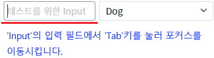
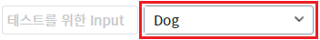
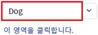
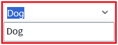
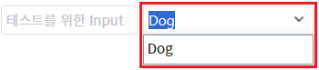

AutoComplete의 'editModeEvent' 속성을 설정하여 편집 모드로 전환할 때 사용할 이벤트를 설정한 예제입니다.
설정에 따른 동작은 다음과 같습니다.
"onclick" : [default] onclick 이벤트 발생 시 편집 모드로 전환.
"onfocus" : onfocus 이벤트 발생 시 편집 모드로 전환. (컴포넌트가 클릭된 경우도 포함)
'onclick' 이벤트 발생 시 편집 모드 전환
'onfocus' 이벤트 발생 시 편집 모드 전환
1
STEP 1: 초기 상태 확인하기
예제 영역 "(기본 설정) 'onclick' 이벤트 발생 시 편집 모드 전환"에 구성된 예제를 확인합니다.
왼쪽에는 'Input'이 있고 오른쪽에는 'AutoComplete'이 구성되어 있습니다.
'Input'은 'AutoComplete'가 포커스되었을 때의 동작을 확인하기 위해 구성되었습니다.2
STEP 2: 포커스되었을 때 편집 모드 전환 여부 확인하기
왼쪽에 구성된 'Input'을 클릭하여 커서를 위치시킵니다. 그 다음 'Tab'키를 눌러 'AutoComplete'으로 포커스를 이동시킵니다.
Image 1.브라우저(Chrome) 실행 예시

3
STEP 3: 실행 결과를 확인합니다.
'AutoComplete'으로 포커스되고 편집 모드로 전환되지 않습니다.
Image 2.브라우저(Chrome) 실행 예시

4
STEP 4: 클릭되었을 때 편집 모드 전환 여부 확인하기
'AutoComplete'을 클릭합니다. 오른쪽에는 구성된 버튼을 클릭하면 목록이 표시됩니다. 버튼을 제외한 컴포넌트 영역을 클릭합니다.
Image 3.브라우저(Chrome) 실행 예시

5
STEP 5: 실행 결과를 확인합니다.
'AutoComplete'으로 포커스되고 편집 모드로 전환되며, 입력 필드에 입력된 값으로 필터되어 목록이 표시됩니다.
Image 4.브라우저(Chrome) 실행 예시

1
STEP 1: 초기 상태 확인하기
예제 영역 "'onfocus' 이벤트 발생 시 편집 모드 전환"에 구성된 예제를 확인합니다.
왼쪽에는 'Input'이 있고 오른쪽에는 'AutoComplete'이 구성되어 있습니다.
'Input'은 'AutoComplete'가 포커스되었을 때의 동작을 확인하기 위해 구성되었습니다.2
STEP 2: 포커스되었을 때 편집 모드 전환 여부 확인하기
왼쪽에 구성된 'Input'을 클릭하여 커서를 위치시킵니다. 그 다음 'Tab'키를 눌러 'AutoComplete'으로 포커스를 이동시킵니다.
Image 5.브라우저(Chrome) 실행 예시
3
STEP 3: 실행 결과를 확인합니다.
'AutoComplete'으로 포커스되고 편집 모드로 전환되며, 입력 필드에 입력된 값으로 필터되어 목록이 표시됩니다.
Image 6.브라우저(Chrome) 실행 예시

4
STEP 4: 클릭되었을 때 편집 모드 전환 여부 확인하기
'AutoComplete'을 클릭합니다. 오른쪽에는 구성된 버튼을 클릭하면 목록이 표시됩니다. 버튼을 제외한 컴포넌트 영역을 클릭합니다.
Image 7.브라우저(Chrome) 실행 예시
5
STEP 5: 실행 결과를 확인합니다.
'AutoComplete'으로 포커스되고 편집 모드로 전환되며, 입력 필드에 입력된 값으로 필터되어 목록이 표시됩니다.
Image 8.브라우저(Chrome) 실행 예시
1
속성을 정의합니다.
[필수] editModeEvent="옵션 값"
편집 모드 전환 시 사용할 이벤트를 설정합니다.
(옵션 설명)
- "onclick" : [default] onclick 이벤트 발생 시 편집 모드로 전환.
- "onfocus" : onfocus 이벤트 발생 시 편집 모드로 전환.(컴포넌트가 클릭된 경우도 포함)
editModeEvent